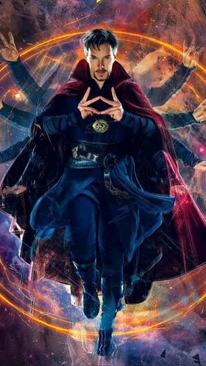
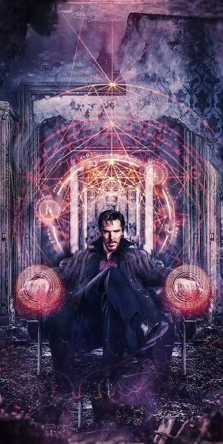

Doctor Strange, whose real name is Dr. Stephen Strange, is a highly skilled surgeon who becomes a powerful sorcerer in the Marvel Cinematic Universe. After a serious accident damages his hands, he travels to learn the Mystic Arts. Doctor Strange gains magical abilities through training and the use of mystical artifacts. He can cast spells, create portals, manipulate energy, control objects, and use astral projection. He becomes an important ally of the Avengers and fights powerful enemies such as Dormammu and Thanos. Doctor Strange is best known for his mastery of magic, intelligence, strategic thinking, and ability to manipulate mystical forces.